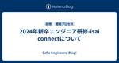

Safie Engineers' Blog!
https://engineers.safie.link/
Safieのエンジニアが書くブログです
フィード

2024年新卒エンジニア研修-新卒研修の成果発表とその後
Safie Engineers' Blog!
24新卒エンジニアは、エンジニア研修として「社内課題を解決するプロダクト開発」というテーマについて取り組みました。自身の体験や社員の方々へのユーザーインタビューを経て、プロダクトを開発しました。今回は2024年新卒エンジニア研修における成果発表と、その後についてお伝えします
15時間前

2024年新卒エンジニア研修-isai connect開発のアウトプット_デバイス編
Safie Engineers' Blog!
2024年新卒エンジニア研修の一環であるチーム開発におけるデバイス分野の開発についてのテックブログ記事。
2日前

2024年新卒エンジニア研修-インフラ構築編
Safie Engineers' Blog!
セーフィーの2024年新卒エンジニア研修で実施したインフラ構築について、実践的な知見を共有します。AWS上でTerraformを使用したIaCの導入から、Multi AZ構成の採用、定期実行タスクの実装、本番環境でのバージョン管理やメンテナンス対応まで、実際に直面した課題と解決策を詳しく解説。新人エンジニアがインフラ構築に取り組む際の参考となる、具体的な実装例や工夫点をご紹介します。
3日前

2024年新卒エンジニア研修-フロントエンド開発編 1
1
Safie Engineers' Blog!
セーフィーの新卒研修の一環で開発したアプリケーションのフロントエンド開発についての記事を書きました✍️
4日前

2024年新卒エンジニア研修-isai connect開発のアウトプット_サーバーサイド
Safie Engineers' Blog!
この記事は Safie Engineers' Blog! Advent Calendar 4日目の記事です。 はじめに こんにちは。第3開発部でエンジニアをしている伊東です。今回は2024年新卒エンジニア研修における、バックエンド分野の開発についてお話しします。 はじめに セーフィーでの2024年新卒エンジニア研修と作ったプロダクトの紹介 機能 設計 ER図 シーケンス図 API仕様書 実装 使用技術 ディレクトリ構成 認証 工夫したポイント おわりに セーフィーでの2024年新卒エンジニア研修と作ったプロダクトの紹介 セーフィーでは全体研修後、約3ヶ月のエンジニア研修があり、エンジニアとして…
5日前

2024年新卒エンジニア研修-isai connectについて
Safie Engineers' Blog!
この記事はSafie Engineers' Blog! Advent Calendar 3日目の記事です はじめに こんにちは、第1開発部でサーバーサイドエンジニアをしている坂上(さかうえ)です。今回は2024年新卒エンジニア研修で開発したプロダクト「isai connect」について、その背景や機能を紹介します。 はじめに isai connectを作った経緯 ターゲットと課題と解決策 開発を始める前のエピソード isai connectの機能紹介 異才ランチに誘う人を探す機能 SlackのグループDM自動作成機能 コネクト履歴機能 コネクト実績機能 デバイス isai connectを育て…
6日前
2024年新卒エンジニア研修-アジャイル開発編
Safie Engineers' Blog!
この記事はSafie Engineers' Blog! Advent Calendar 2日目の記事です。 はじめに こんにちは！第1開発部でサーバーサイドエンジニアをしている古谷です！ 今回は2024年新卒エンジニア研修で行った開発について開発体制の観点からお話しします！ はじめに セーフィーでの2024年新卒エンジニア研修と作ったプロダクトの紹介 開発体制をアジャイル開発に決定 スクラムで意識したこと スクラムイベントでの工夫 ユーザーストーリーマッピング スプリントプランニング デイリースクラム スプリントレビュー レトロスペクティブ ポジティブ共有会 結果と感想
7日前
新卒研修の紹介とチーム開発前にやったこと 1
Safie Engineers' Blog!
2024年新卒エンジニア研修の紹介！ セーフィーの新卒研修ではチーム開発をおこなっています。このチーム開発研修を通してチームマネジメント・開発（フロント、サーバ、デバイス、CI・CD）・運用・保守を学んでいくのが目的になります。
8日前

新卒エンジニアが技育祭2024【秋】に登壇！プロダクトエンジニアとしての第一歩の踏み出し方
Safie Engineers' Blog!
2024年新卒エンジニアとして技育祭2024【秋】に登壇しました。日本最大の学生向けオンラインカンファレンスで、新卒研修で学んだプロダクト開発の知見や、学生時代には得られなかった実践的な学びを共有。120名以上が参加し、プロダクト開発における重要なポイントや、セーフィーでの新卒エンジニアの働き方について紹介しました。
10日前
第62回 コンピュータビジョン勉強会＠関東をセーフィーで開催しました
Safie Engineers' Blog!
こんにちは、第3開発部AI Visionグループのおにきです。 この記事では11月16日（土）にセーフィー社内の会議室で行われたイベント、「第62回 コンピュータビジョン勉強会＠関東 ECCV2024読み会」について紹介したいと思います。 コンピュータビジョン勉強会＠関東 開催にいたる経緯 準備 会場の確認と設備チェック 参加者への配慮 懇親会の準備 当日の様子 参加者の到着 セーフィーの紹介 セーフィーからの発表 その他の発表と全体の印象 懇親会 さいごに
13日前
LLMチャットツールの社内導入
Safie Engineers' Blog!
近年大規模言語モデル (LLM) 技術の発達に伴い、社内でもGitHub Copilotをはじめとする各種AIツールの導入が進んでいます。本件ではLLM技術を用いたAIチャットツールとしてAmazon Bedrockを導入した経緯について紹介します。
23日前
GitHub PR分析ツール：レビュー効率化と属人化解消のための可視化方法
Safie Engineers' Blog!
はじめに セーフィー株式会社の AI Vision グループでテックリードを務めます橋本貴博です。 私たちのチームでは、レビューの属人化や特定のメンバーへの負担の集中が課題となっていました。どのメンバーがレビューするかによって、そのやり方やフィードバックの質にバラつきが出ることも少なくなく、これがコードの品質に影響を及ぼしていました。 そのため、チーム全体でレビューを行うことで、コードの知識を全員で共有し、レビューのやり方や品質を標準化したいと考えていました。こうすることで、誰がレビューしても同じように高品質なコードが保たれるようになります。 さらに、Pull Request (PR) の数を…
1ヶ月前
AndroidでSceneViewを使って、3D/ARを表示する
Safie Engineers' Blog!
こんにちは！Safie第2開発部のAndroidエンジニアのジェローム(@yujiro45)です。 Androidで3D/ARモデルを表示するのは難しそうに見え、技術的に大変そうですね。 この記事では、Sceneview-androidを使用して簡単に3DとARモデルを表示する方法を紹介します。 SceneViewとは 導入 実装 アニメーション ARで動画を表示する まとめ
2ヶ月前
DroidKaigi 2024に参加してきました！
Safie Engineers' Blog!
こんにちは！Safie第2開発部のAndroidエンジニアのジェローム(@yujiro45)です。 今年も、日本最大のAndroid開発者イベントであるDroidKaigi 2024に参加してきました！ Day 0のワークショップから最後まで参加しました。この記事では、今年10周年となるDroidKaigiで何をやったのか、何があったのか、個人的におすすめのトークなどについてお話しします！
2ヶ月前
Mobile Dev Japan #3 イベントを共同開催した話
Safie Engineers' Blog!
2024/07/26 にセーフィー本社で行われたイベント Mobile Dev Japan について紹介
2ヶ月前
夏祭りのようなiOSDC 2024参加してきました！
Safie Engineers' Blog!
こんにちは！Safie第2開発部のiOS Engineerアダム(@monolithic_adam)です！今年の夏暑いですね！ でも夏といえばあれしかないでしょう！そうiOSDC Japanです！ 今年もみんな集まって早稲田でワイワイするiOSイベント！ 最高の企画してくれたので#iwillblog熱が冷めないうちにブログ書いています！ Day 0は残念ながら現地参加できなかったけどオンラインで楽しくみていました！ 各トラックを切り替えながら楽にトーク見えてハイブリッド頑張ってくれているiOSDCに感謝！ コードバトルは気になっていて、見始めたら面白くてほぼDay 0全部コードバトル見てしまっ…
3ヶ月前
YOLOv8を活用した通行量カウントシステムの実装
Safie Engineers' Blog!
はじめに セーフィー株式会社 で画像認識AIの開発エンジニアをしている今野です。 今回は、最新の物体検出アルゴリズムであるYOLOv8を活用して、特定エリアを通過する車両を自動的にカウントするシステムの実装方法をご紹介します。このシステムは、交通量調査や駐車場の利用状況分析など、様々な場面で応用可能な技術です。 本記事では、YOLOv8による物体検出から、検出結果の後処理、そして実際の車両カウントまでの一連のプロセスを、具体的なコード例を交えて解説していきます。AIを活用した実用的なソリューションの構築に興味のある方々にとって、有益な情報となれば幸いです。 はじめに やりたいこと 実施手順 環…
3ヶ月前
We held our first English event at Safie, Safie English School!
Safie Engineers' Blog!
Hey, it's Adam from Safie. monolithic-adam.hatenablog.com Since I joined in March I have been wanting to start doing an English event to get to know my new coworkers better. I was finally able to do it in June so I wanted to write about it! Safie English School Introduction & Icebreaker English Game…
4ヶ月前
HDMI出力デバイスの映像をSafieのクラウドで一括管理できる Safie Connect の紹介
Safie Engineers' Blog!
HDMIで出力した映像データをLTE通信でSafieクラウドに伝送して、Live配信・クラウド録画を提供するサービス「Safie Connect」の紹介です。
4ヶ月前
M5Stack社マイコンの社内ワークショップを開催しました
Safie Engineers' Blog!
セーフィーでは普段の業務で使う技術だけでなく、エンジニアのスキルアップのために様々な取り組みを行っています。先日は、IoT機器の開発に欠かせないマイコン について理解を深めるため、M5Stack社の製品を使ったワークショップを開発部で開催しました。
4ヶ月前
GradioとFaster-Whisperで簡単に動画の文字起こしアプリを作ってみた
Safie Engineers' Blog!
GradioとFaster-Whisperを使用して動画から文字起こしを行うアプリを簡単に作る
4ヶ月前
スクラムチームの振り返りに Sailboat Retrospective を導入してみた
Safie Engineers' Blog!
スクラムチームの振り返りに 導入しているSailboat Retrospective というフレームワークについて、メリットを紹介します。
5ヶ月前
Safie APIとDeep Learningで飼い猫の健康管理をしてみた
Safie Engineers' Blog!
Safie APIとDeep Learningを利用して、飼い猫達を画像分類し給仕DXをしたのでお伝えしていきたいと思います。
5ヶ月前
CVPR 2024 技術動向調査: Best Paper Award Candidates まとめ
Safie Engineers' Blog!
はじめに CVPR2024は、コンピュータビジョンとパターン認識の分野における最前線の研究成果を集める国際会議です。今年の論文提出数は11532件で、昨年のCVPR2023から26％の増加を記録しました。その中で採択されたのは2719件、採択率は23.6％です。この中から特に優れた24件の論文が Best Paper Award 候補として選出されました。 本記事では、これらのアワード候補となった論文の概要と、その技術的な特徴を紹介します。最先端の技術動向の理解や、今後の研究開発に役立てていただければ幸いです。
6ヶ月前
Findy さん主催のイベント「TechBrew in 東京 ~モバイルアプリの技術的負債に向き合う~」にて発表してきました
Safie Engineers' Blog!
はじめに 第 2 開発部モバイルグループで iOS テックリードをしている鞆です。 2024 年 5 月 23 日に開催された Findy さん主催のイベント TechBrew in 東京 ~モバイルアプリの技術的負債に向き合う~ にて、発表させていただきました。 findy.connpass.com 当日の様子を含めてイベントレポート的な形でご紹介できればと思います！ はじめに 会場 オープニング 発表内容 Bitkeyのモバイルアプリを進化させるための歩き方 @arasan01_me モバイルアプリの技術的負債に全社を挙げて取り組む考え方 @mikity01985 パッケージ管理でモバイル…
6ヶ月前